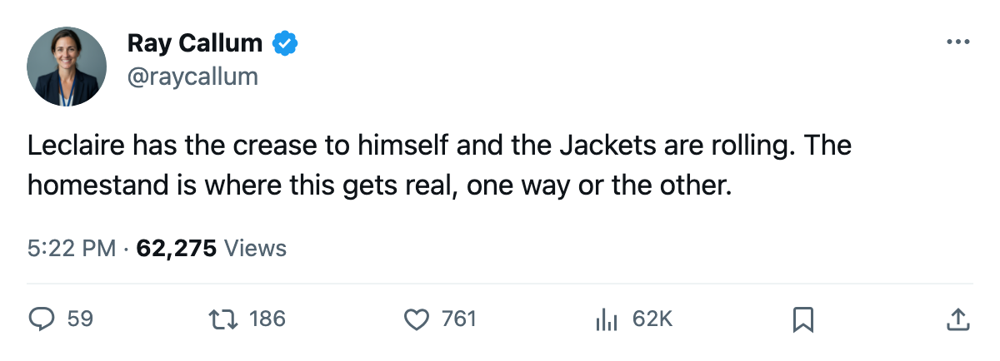
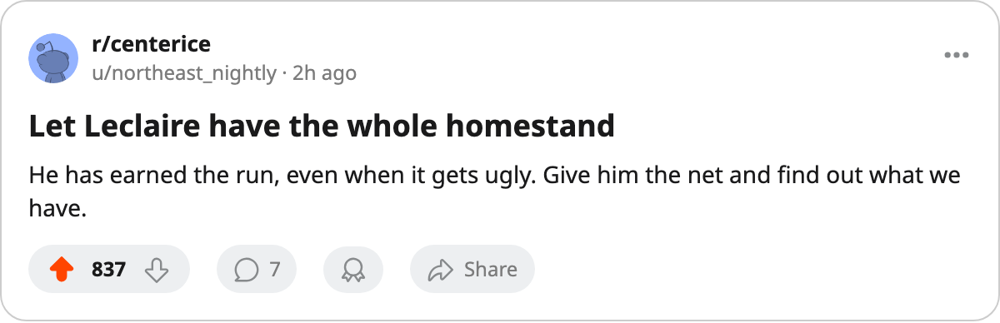

Numbers Game: Columbus Open a Three-Game Homestand With One Goalie in the Crease
The Blue Jackets have won two straight and allowed 5 goals in 3 games, and Pascal Leclaire has played all of it.
 Ray CallumSenior correspondent · Home Ice Network
Ray CallumSenior correspondent · Home Ice Network
Columbus carry 4 points from 3 games into a three-game homestand that opens against Florida on 2005-10-19.
The  Columbus Blue Jackets Blue Jackets dropped their opener and have won two straight since.
Columbus Blue Jackets Blue Jackets dropped their opener and have won two straight since.  Pascal Leclaire91 has been in the net for all 3 games, and the club has allowed 5 goals. He is the only Columbus goaltender on the league's workload sheet; no other man has appeared.
Pascal Leclaire91 has been in the net for all 3 games, and the club has allowed 5 goals. He is the only Columbus goaltender on the league's workload sheet; no other man has appeared.
St. Louis lead the Central with 4 points from 2 games. Columbus and Nashville also have 4, and Chicago and Detroit have 3. Columbus are 4th in the West on 4 points, level with the Blues.
In May the club took two centres from Montreal and sent three defencemen the other way, a trade meant to change the middle of the ice. Nobody on the roster is on the injured list, which is more than most of the division can say.
| date | opponent | record | pts |
|---|---|---|---|
| 2005-10-19 |  Florida Panthers Florida Panthers | 0-2-1 | 1 |
| 2005-10-23 |  Tampa Bay Lightning Tampa Bay Lightning | 2 wins, both in overtime | 4 |
| 2005-10-25 |  St. Louis Blues St. Louis Blues | 2-0-0 | 4 |
Florida arrive last in the East with 1 point, 7 goals scored and 12 allowed, on a three-game losing streak.  Branislav Mezei69 is out with a leg injury to 2005-11-13, and the Panthers have 3 spells on the ledger.
Branislav Mezei69 is out with a leg injury to 2005-11-13, and the Panthers have 3 spells on the ledger.
Tampa Bay have won both their games in overtime. St. Louis have won both of theirs and allowed 3 goals, with  Chris Osgood79 in goal for each.
Chris Osgood79 in goal for each.
The homestand closes on 2005-10-25 against the Blues, who have not lost.

